Train presence absence models
Source:vignettes/articles/train-tune-presence-absence-models.Rmd
train-tune-presence-absence-models.RmdIntro
All the previous articles are based on presence only methods, in this article you will learn how to train a presence absence model. The following examples are based on the Artificial Neural Networks method (Venables and Ripley 2002), but you can adapt the code for any of the other supported methods.
Prepare the data for the analysis
We use the first 8 environmental variables and the same
virtualSp() dataset selecting the absence instead of the
background locations.
p_coords <- virtualSp$presence
a_coords <- virtualSp$absence
data <- prepareSWD(species = "Virtual species",
p = p_coords,
a = a_coords,
env = predictors[[1:8]])
data#>
#> ── Object of class: <SWD> ──
#>
#> ── Info
#> • Species: Virtual species
#> • Presence locations: 400
#> • Absence locations: 300
#>
#> ── Variables
#> • Continuous: "bio1", "bio12", "bio16", "bio17", "bio5", "bio6", "bio7", and
#> "bio8"
#> • Categorical: NAThere are 400 presence and 300 absence locations.
For the model evaluation we will create a training and testing datasets, holding apart 20% of the data:
library(zeallot)
c(train, test) %<-% trainValTest(data,
test = 0.2,
seed = 25)At this point we have 560 training and 140 testing locations. We create a 4-folds partition to run cross validation:
folds <- randomFolds(train,
k = 4,
seed = 25)Train the model
We first train the model with default settings and 10 neurons:
set.seed(25)
model <- train("ANN",
data = train,
size = 10,
folds = folds)
model
#>
#> ── Object of class: <SDMmodelCV> ──
#>
#> Method: Artificial Neural Networks
#>
#> ── Hyperparameters
#> • size: 10
#> • decay: 0
#> • rang: 0.7
#> • maxit: 100
#>
#> ── Info
#> • Species: Virtual species
#> • Replicates: 4
#> • Total presence locations: 320
#> • Total absence locations: 240
#>
#> ── Variables
#> • Continuous: "bio1", "bio12", "bio16", "bio17", "bio5", "bio6", "bio7", and
#> "bio8"
#> • Categorical: NALet’s check the training and testing AUC:
Tune model hyperparameters
To check which hyperparameters can be tuned we use the function
getTunableArgs() function:
getTunableArgs(model)
#> [1] "size" "decay" "rang" "maxit"We use the function optimizeModel() to tune the
hyperparameters:
h <- list(size = 10:50,
decay = c(0.01, 0.05, 0.1, 0.2, 0.3, 0.4, 0.5),
maxit = c(50, 100, 300, 500))
om <- optimizeModel(model,
hypers = h,
metric = "auc",
seed = 25)The best model is:
best_model <- om@models[[1]]
om@results[1, ]| size | decay | rang | maxit | train_AUC | test_AUC | diff_AUC |
|---|---|---|---|---|---|---|
| 16 | 0.4 | 0.7 | 500 | 0.9853791 | 0.9545833 | 0.0307957 |
The validation AUC increased from 0.7931771 of the default models to 0.9545833 of the optimized one.
Evaluate the final model
We now train a model with the same configuration as found by the
function optimizeModel() without cross validation
(i.e. using all presence and background locations) and we evaluate it
using the held apart testing dataset:
